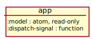
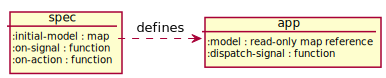

Basics
This section explains everything you need to start making apps with Carry.
App

In a Carry application all the code you write is encapsulated behind a single app instance. An app is a map with keys:
:model- a read-only atom, an in-memory representation of an app state:dispatch-signal- a function for interaction with an app, always returns nil
One can consider an app to be a black box which exposes its current state and modifies it on getting signals from an external world. It can also affect an external world as a response to a signal, i.e. perform "side effects".
Model
Model represents an entire state of an app.
One can access app's model via :model key to obtain a read-only atom that can be dereferenced and watched, but cannot be mutated:
(def my-model (:model app))
@my-model
;=> {...}
(add-watch my-model :my-watcher
(fn [_key _atom old-state new-state]
(when (not= old-state new-state)
(println "model value has changed!"))))
(reset! my-model {:foo :bar})
;=> Error: read-only atom cannot be reset to {:foo :bar}
((:dispatch-signal app) some-model-changing-signal)
;=> model value has changed!
(remove-watch my-model :my-watcher)
Carry requires a model value to be a map. This convention allows writing reusable packages that can store additional data into any Carry app.
As an example, carry-history adds :token to a model.
Signals
Signal is an object which represents a user's intention or, looking at it from a different angle, a system event.
Signal can be synchronously sent to an app by calling its dispatch-signal function:
((:dispatch-signal my-app) my-signal)
Carry accepts signals of any type. But usually signal is a just keyword with the "on-" prefix or a serializable vector with a keyword and an additional payload:
:on-clear-completed
[:on-update-todo id val]
[:carry-history.core/on-enter token]
Creating an App
In order to create an instance of a Carry app a user has to pass a spec into the app function:
(def my-app (carry/app my-spec))
A spec is a map with keys:
:initial-model- an initial model value:control- a function for handling signals:reconcile- a function for handling actions
In other words, a spec is needed to define a runtime behavior of an app:

Control
Controller (control function, control) is a part of an application responsible for handling incoming signals. It can dispatch new signals, modify app model (by dispatching actions) and perform any side effects (e.g. send data to a server). Controller is free to contain asynchronous code. The signature of a control function:
(defn control
[model signal dispatch-signal dispatch-action])
model- a read-only atom, the same as app's:modelsignal- an incoming signaldispatch-signal- a synchronous function for dispatching new signals, always returnsnil, the same as app's:dispatch-signaldispatch-action- a synchronous function for modifying a model, always returnsnil- Return value will not be used
By convention, control should be able to at least handle :on-start and :on-stop signals.
As we'll see later, it's required by middleware with setup/teardown logic and to support hot reloading.
It is convenient (but not required) to use pattern matching to switch between signals and destructure signals with payload. As an example, this is a controller from friend-list demo app:
(ns friend-list.core
(:require [carry-history.core :as h]
; ...
[goog.functions :refer [debounce]]
[cljs.core.match :refer-macros [match]]))
; It's recommended to create a factory function if controller uses external dependencies.
; It makes code more decoupled and
; easier to unit test (stubs/mocks can be easily used instead of real implementations).
; In this example browser history manager and API client are external dependencies.
(defn -new-control
[history api-search]
; Some helper functions.
; On successful search a new :on-search-success signal will be dispatched.
(let [search (fn [q dispatch-signal] (api-search q #(dispatch-signal [:on-search-success q %])))
search-on-input (debounce (fn [q dispatch-signal]
(h/push-token history q)
(search q dispatch-signal))
300)]
; Function name is specified for better stacktraces.
(fn control
[model signal dispatch-signal dispatch-action]
(match signal
; This application has no custom setup/teardown logic
; so just return nil on standard signals:
:on-start nil
:on-stop nil
; Macro will throw an exception on unknown signals.
; Signal destructuring example
[:on-input q]
(do
; Update model.
(dispatch-action [:set-query q])
; Begin (possibly async) searching.
(search-on-input q dispatch-signal))
; ...
[:on-search-success q friends]
; Note that model has to be dereferenced to get its value.
(if (= (:query @model) q)
(dispatch-action [:set-friends friends])
(println "ignore response for" (pr-str q)
"because current query is" (pr-str (:query @model))))))))
; ...
; Dependencies will be injected in a spec factory function:
(defn new-spec
[history api-search]
{; ...
:control (-new-control history api-search)})
; ...
; Create and start an app using concrete dependencies.
(def my-app (carry/app (new-spec my-history my-api-client)))
((:dispatch-signal app) :on-start)
Actions
Action is an object which represents an intention to modify a model.
Actions can be dispatched only from within a control function via dispatch-action.
Similar to signals, actions are usually keywords or vectors, for instance:
:increment
[:set-query q]
Reconcile
Reconciler (reconcile function, reconcile) is a part of an application responsible for handling incoming actions. It's a pure function which returns a new model value based on a current model value and an incoming action. On getting an action an app passes it into a reconciler and then resets app model value with the result.
A simple example from friend-list demo app:
(defn -reconcile
[model action]
(match action
[:set-query q]
(assoc model :query q)
[:set-friends friends]
(assoc model :friends friends)))
It's important to not put any async code, side effects or nondeterministic code (e.g. random number generation) into reconciler. Otherwise, it will make replaying actions unpredictable and break time traveling debugging.
Usage with Reagent
This section is a WIP. Please see examples in a meantime.
Advanced
Middleware
This section is a WIP. Please see examples in a meantime.
Usage with Figwheel
This section is a WIP. Please see examples in a meantime.
Writing Tests
This section is a WIP. Please see examples in a meantime.
Elm-ish Architecture
This section is a WIP. Please see examples in a meantime.
Usage with Datascript
This section is a WIP. Please see examples in a meantime.
Debugging
This section is a WIP. Please see examples in a meantime.